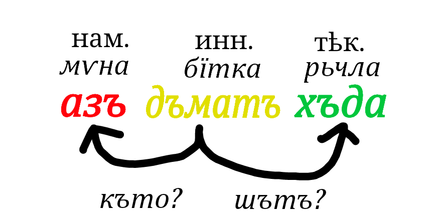

бїтка
бїтка ѧзїку наваборћава субъѣкту офортатъ иста.
ѧзїкатъ сіє бїткіу лѣ видиміу иста
іу̀аріанти бїткіу
тътъ нѣи іу̀аріанти бїткіу иста:
- лоћъ
- вьца
- ау̀торъ
- говь
- сѣу̀
завѣти аки бїткіу ѱє
бїтки ѳиналатъ буку "а", "о", "ъ", "ь", "ѵ", "у̀"[1] бо "ѧ" ѕа ѱе.
бїтки сифу мьнȧ ѳиналатъ "и" (а іу̀аріанти видиміу можѣ "итъ", "іу" а другȧ иста, сє.
видими бїткіу).

прємѣчки
1 -- буку "у кратъкȧ"